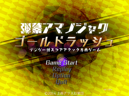

- Welcome to Touhou Wiki!
- Please register to edit. For assistance, check in with our Discord server or IRC channel.
Gold Rush
Danmaku Amanojaku Gold Rush | |
|---|---|
|
 | |
| Developer | |
| Publisher | |
| Released |
(One-time play) November 16, 2014 (Digital Game Expo 2014) |
| Genre |
Single-player puzzle Danmaku shooting Game |
| Platforms |
Windows Vista/7/8 |
| Requirements |
Unknown |
- For the unofficial replica based on this game, see Gold Rush (Remake).
Danmaku Amanojaku Gold Rush (弾幕アマノジャク ゴールドラッシュ) is a one-stage danmaku mini game[1] and publicly-unreleased installment of the Touhou Project, featuring Seija Kijin as the sole playable character and Reimu Hakurei as the sole stage boss. The game was created for Digital Game Expo 2014's "Doujin Shooting Game Caravan" contest, where it was available to be played. The game was not ever meant to be sold or played outside of the event[2][3] and was made in only two days[4], so it is possible it might never be released to the public. It was made available again to be played on the 2017 Digital Game Expo, along with all of ZUN's previous official games and music CDs (including the five PC-98 games, although these could not be bought and could only be played at the event).
Contents
Gameplay[edit]
The player controls Seija Kijin. She has two "cheat" items available, functioning similarly to Impossible Spell Card. Unlike Impossible Spell Card, however, Seija cannot shoot. As her secondary item, she uses the Substitute Jizo (身代わり地蔵), which allows her to be hit up to a maximum of five times, and as her primary item she uses a 10th "rule-breaking" item, the Miracle Mallet (Real) (打ち出の小槌（本物）), which destroys hit danmaku and chains along all the danmaku surrounding it, and converts them all into koban coins. This is somewhat similar to Cirno's "perfect freeze" in Fairy Wars. The Miracle Mallet can be used infinitely, unlike the items in Impossible Spell Card, but it carries a small lag period between each use.
Described as a short "score attack" game, Seija's goal is to achieve the highest score possible by transforming Reimu Hakurei's danmaku into koban coins in only a few minutes with no continues. The screen goes straight to the title immediately after the score is shown because there is no "continue". The game also saves all the play history automatically as replays, so that they could be viewed at any time.[5] Scores are displayed in the value of modern day yen; the way the score converts koban to yen is:[5]
(Your score) × 8932
There is only one stage in the game. The title of the stage is:
- Scene EX – Monetary Easing in Another Dimension (シーンEX 異次元の金融緩和)
Concept[edit]

Danmaku Amanojaku Gold Rush is ZUN's first non-packaged game since Uwabami Breakers. ZUN announced the game on the 14th of November, 2014 as a minigame for the Digital Game Expo 2014 convention and its "Doujin Shooting Game Caravan" competition, where participants would play a number of short games for score. He hadn't even started creating the game beforehand, spending less than two days creating it[4]. Using Impossible Spell Card's engine, ZUN made this game with a low difficulty and a short length, since the sole purpose is to score attack. ZUN stated that "You can beat it in about two minutes in one playthrough," and that it was "built only for playing at that place, containing nothing marketable."[1] The people who attended could only have one try at playing the game in one sitting. After the player finished their run, their score was recorded on a sheet alongside their scores for other games in the competition.[5] Once they completed and submitted their whole score sheet, they could get a new one and try again.
On the title screen, the text below the title reads "Special Game for Digital Game Expo Score Attack". The title screen also contains coins that resemble the Canadian Gold Maple Leaf bullion coin. The stage title "Monetary Easing in Another Dimension" is implicitly related to quantitative easings led by Haruhiko Kuroda, governor of the Bank of Japan. ZUN's impression of the quantitative easing declared on November 31st in 2014 was such that he decided that the game should be generous and gorgeous, feeling like a temporary monetary bubble.
On a strange note, although Seija is said to fight Reimu at the Hakurei Shrine, the stage's background appears to be the Moriya Shrine from Subterranean Animism with different effects. This is likely because, prior to Hidden Star in Four Seasons, the Hakurei Shrine was not used as a background in a Windows Touhou game, and given two days, using the already-finished Moriya Shrine was the easiest option.
Name[edit]
This is the second official Touhou Project game that does not bear the kanji Touhou (東方) in its title, the first being Impossible Spell Card. Just like Impossible Spell Card, the Japanese part of the title is composed of "danmaku" (弾幕), referring to the main theme or genre of the game, while Amanojaku (アマノジャク) refers to the playable character's species: Seija Kijin. The name of the game also describes the goal, which is to transform danmaku into gold coins and gather as much of it as quickly as possible.
Characters[edit]
|
|
Story[edit]
Following Impossible Spell Card, somehow acquiring the ultimate rule-breaking item, the Miracle Mallet (Real), Seija sets about robbing the Hakurei Shrine of its assets before the Miracle Mallet's power runs out. Also explaining the oddity of the scenario, when asked by fans about why Seija can use the Miracle Mallet, which only the Inchlings can use, his answer was: she can't; the game was made in a short amount of time, with no consideration for the setting at all.[6][7]
Music[edit]
There are two songs in the game, the Impossible Spell Card Title Screen theme, "Raise the Signal Fire of Cheating" and Shinmyoumaru Sukuna's Stage 6 Boss theme from Double Dealing Character, "Inchlings of the Shining Needle ~ Little Princess". Both were said by ZUN to be arrangements.[8]
Fandom[edit]
References[edit]
- ↑ 1.0 1.1 Maidens of the Kaleidoscope - ZUN and Touhou Status 2
- ↑ https://twitter.com/korindo/status/533521707504381952
- ↑ https://twitter.com/korindo/status/533073899441750017
- ↑ 4.0 4.1 https://twitter.com/korindo/status/533071698946318336
- ↑ 5.0 5.1 5.2 Maidens of the Kaleidoscope - Touhou 14.5 announced at Digital Game Expo 2014!
- ↑ http://blog.livedoor.jp/tohomemory/archives/41324779.html
- ↑ https://twitter.com/Aerium/status/533868433490718720
- ↑ Twitter on ZUN's themes
External Links[edit]
Official[edit]
Unofficial[edit]
| |||||||||||||||||||||||||||||||||||||||||||||||||||||
| ||||||||||||||||